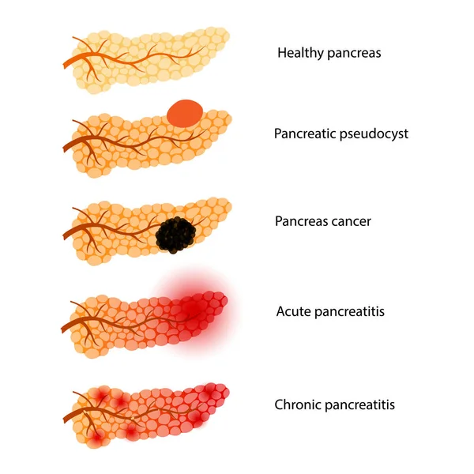

| Características del órgano para trasplantes | |
El trasplante de páncreas es una cirugía para colocar un páncreas sano de un donante en una persona con un páncreas enfermo. Este trasplante es más común en personas con diabetes tipo 1 grave y permite que las personas con esta enfermedad no dependan de las inyecciones de insulina. |
|
Los donantes suelen ser personas que presentan todas las características siguientes: |
| - Fallecidos recientemente |
| - Tenían entre 10 y 55 años |
| - No sufrían un trastorno por consumo de alcohol |
| - No habían sufrido ni prediabetes (la concentración de glucosa en sangre es demasiado alta para ser considerada normal pero no lo suficiente para ser catalogada como diabetes) ni diabetes |
|  |